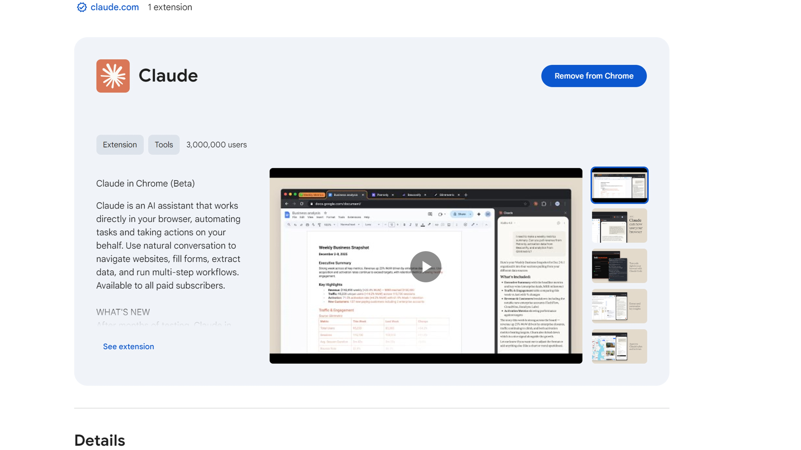

이 강좌에서 하나만 기억한다면, 바로 이 워크플로우입니다: 탐색, 계획, 코딩, 그리고 커밋. 이 워크플로우 없이는 대부분의 사람들이 바로 Claude에게 코드 작성을 요청하게 되고, 이는 나중에 더 많은 수정 작업을 의미합니다.
탐색과 계획
이 처음 두 단계를 처리하는 가장 빠른 방법은 Plan Mode를 사용하는 것입니다. Plan Mode에서 Claude는 파일을 편집할 수 없고, 구현 방법에 대한 정보를 수집하기 위해 파일을 읽기만 합니다.
Plan Mode에 진입하려면 텍스트 입력란 아래에 "Plan Mode"가 표시될 때까지 Shift + Tab을 누르세요. 그런 다음 다음과 같은 프롬프트를 작성합니다:

I need to add WebP conversion to our image upload pipeline. Figure out where in the pipeline it should happen, whether we need new dependencies, and how to approach it.Claude는 관련 파일을 읽고, 웹 검색을 수행한 후 실행 계획을 제시합니다. 이를 검토하고 기준에 부합하는지 판단하세요. 부합하지 않으면 특정 부분의 수정을 요청하세요.

코드가 작성되기 전이므로 여기서 방향을 수정하는 것이 가장 좋습니다. 이후에 변경할 의도 없이 코드베이스의 일반적인 요약만 원한다면, Plan Mode가 아닌 상태에서도 탐색 서브에이전트를 실행할 수 있습니다.
코딩
계획이 만족스러우면 "승인"을 선택하여 수락하고 Claude가 목록 항목을 처리하도록 합니다. Claude가 파일 편집을 자동 수락할지, 매번 물어볼지 선택할 수 있습니다.
Claude는 계획을 "완료"로 간주하기 전에 최선을 다해 문제를 해결하지만, 때때로 직접 개입해야 할 수도 있습니다. 이것이 Plan Mode로 작업하는 장점입니다 — 실행 후에도 결과에 도달한 과정의 맥락을 갖게 되어 Claude의 다음 결정을 안내하는 데 도움이 됩니다.
코딩 단계를 더 원활하게 만드는 몇 가지 팁:
- 성공 기준을 정의하세요. Claude가 결과에 확신을 가지려면 "올바른" 것이 어떤 모습인지 명확해야 합니다. 계획을 작성할 때 이를 명시적으로 기술하세요.
-
도구를 추가하세요. Claude가 목표를 달성하는 데 도움이 되는 도구는 많은 반복 작업을 줄여줍니다. 예를 들어, 웹 UI를 구축하는 경우 Claude in Chrome 확장 프로그램을 설치하면 Claude Code가 브라우저 탭을 제어하고 UI를 직접 테스트할 수 있습니다.

- 테스트 스위트를 포함하세요. Claude가 지속적으로 검증할 수 있는 테스트 스위트를 제공하세요. Claude가 테스트를 대신 작성할 수도 있습니다. 이를 맡기기 전에 오탐을 방지하기 위해 테스트가 신뢰할 수 있는 기준인지 확인하세요.
빠른 팁: Claude가 같은 문제에 계속 부딪힌다면, 해결책을 CLAUDE.md 파일에 저장하도록 요청하세요.
커밋
변경 사항을 직접 테스트하고 결과에 만족했다면, 코드를 푸시할 차례입니다. 커밋하기 전에 서브에이전트 코드 리뷰어를 실행하여 작업을 검토하세요. 서브에이전트는 코드베이스를 새로운 시각으로 볼 수 있습니다 — 세션에서 메인 에이전트가 가질 수 있는 편향을 가지고 있지 않기 때문입니다.

그런 다음 Claude에게 여러분의 스타일로 커밋 메시지를 생성하도록 하세요. 이 과정을 반복합니다.
요약
Claude Code를 효과적으로 사용하려면 탐색, 계획, 코딩, 커밋 워크플로우를 따르세요:
- 탐색은 Claude에게 프로젝트에 필요한 관련 컨텍스트를 제공합니다.
- 계획은 Claude가 성공을 측정하는 데 사용하는 실행 계획을 수립합니다.
- 코딩은 최종 결과를 확정하기 전에 여러분과 Claude 사이의 반복적인 협업 과정입니다.
- 커밋은 코드를 검토하고 푸시하여 다음 기능 작업을 시작할 수 있도록 도와줍니다.